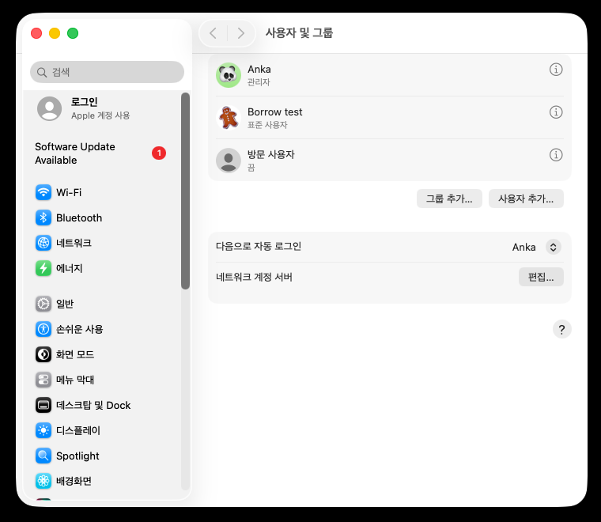
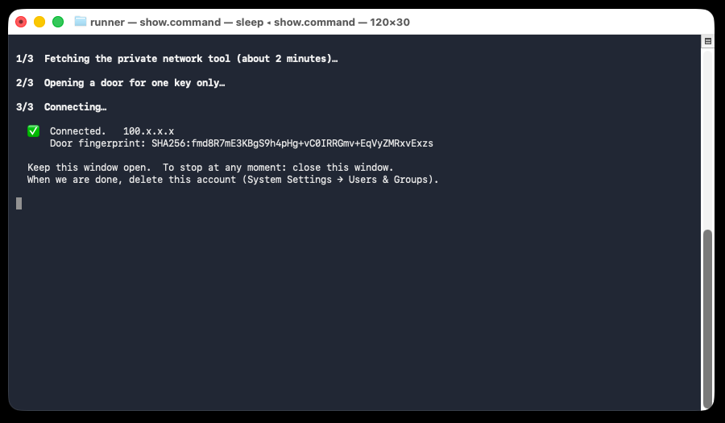

맥 잠깐 빌려주기
새 계정 하나 만들고, 받은 한 줄을 붙여 넣으면 끝. 비밀번호를 알려 줄 일은 없어요.
1새 계정 만들기
시스템 설정 → 사용자 및 그룹 → 사용자 추가…
종류는 표준, 이름은 borrow.

2받은 한 줄 붙여 넣기
⌘ + 스페이스 → "터미널" → 메시지로 받은 한 줄을 붙여 넣고 Enter.
Ready 가 뜨면 그 창은 닫아도 돼요.
3새 계정에서 열기
왼쪽 위 애플 메뉴 → 잠금 화면 → borrow 로 로그인 → 터미널을 열고 이것만 입력하고 Enter.
/Users/Shared/borrow.command
2분쯤 뒤 ✅ Connected 가 뜨면 된 거예요. 그 창은 열어 두세요.

4끝나면
터미널 창을 닫고, 원래 계정에서 사용자 및 그룹 → borrow 옆 ⓘ → 사용자 삭제 → 홈 폴더 삭제.
안심해도 되는 까닭
- 새 계정은 표준 계정이라 내 파일·사진·비밀번호에 닿지 못해요.
- 터미널 창을 닫는 순간 바로 끊겨요.
- 설치되는 것은 전부 새 계정 안에만. 계정을 지우면 다 사라져요.
- 실행되는 스크립트는 여기서 읽어 볼 수 있어요.